A Agenda 2030 é um plano global criado pela ONU em 2015 para promover o desenvolvimento sustentável até 2030. Adotada por 193 países, ela reúne 17 Objetivos de Desenvolvimento Sustentável (ODS) voltados ao combate da pobreza, da desigualdade, das mudanças climáticas e de outros desafios sociais, econômicos e ambientais, buscando melhorar a qualidade de vida das pessoas e proteger o planeta.
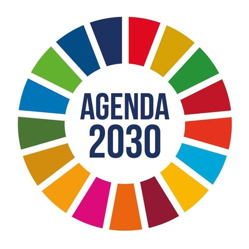
Os ODS (Objetivos de Desenvolvimento Sustentável) são 17 metas criadas pela ONU em 2015 para promover o desenvolvimento sustentável e melhorar a qualidade de vida das pessoas, protegendo o meio ambiente até 2030.
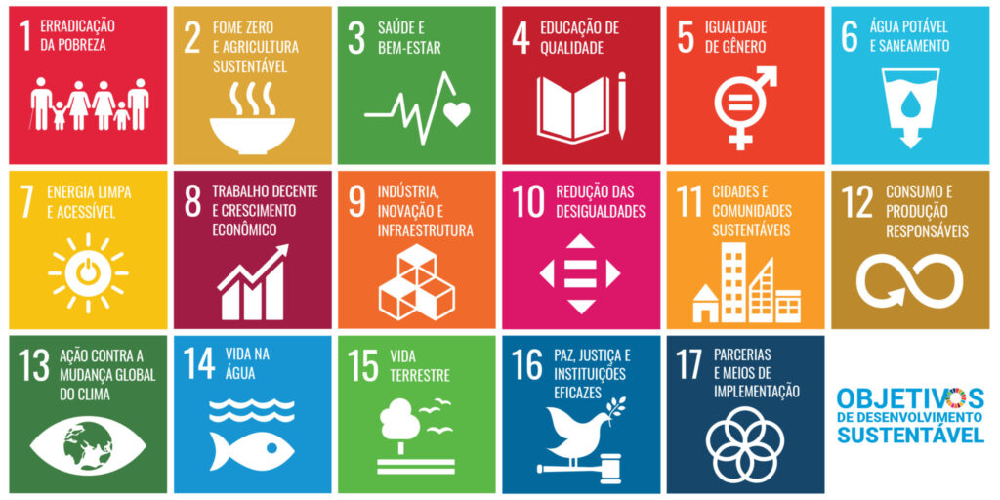
Os ODS são organizados em cinco grandes eixos, conhecidos como os 5 Ps da Agenda 2030.
Busca garantir dignidade e qualidade de vida para todos.

Tem o objetivo de proteger os recursos naturais e combater impactos ambientais.
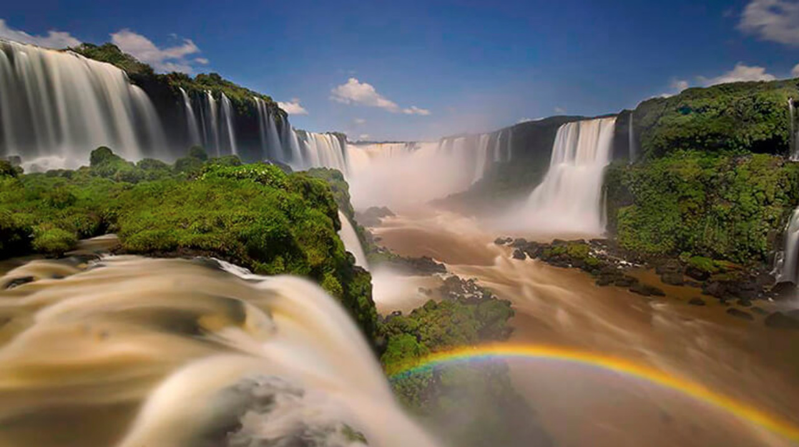
Promove crescimento econômico sustentável e inovação.
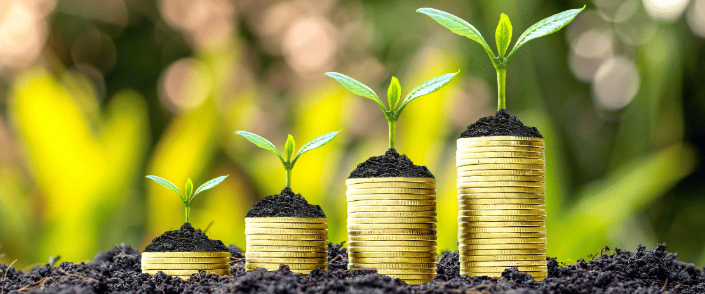
Defende sociedades mais justas e inclusivas.
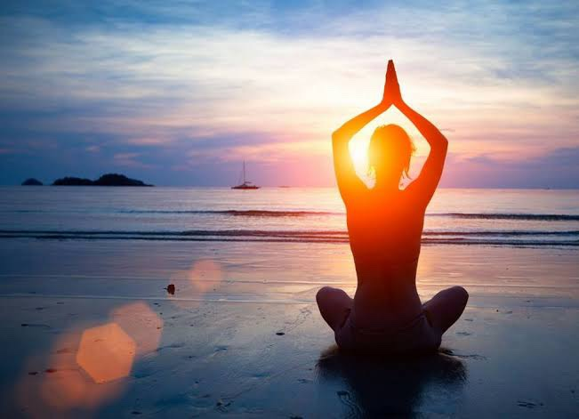
Destaca a cooperação entre países e organizações.
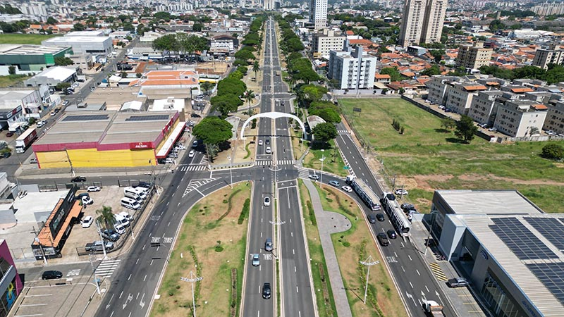
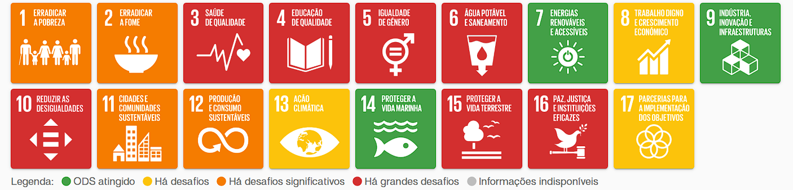
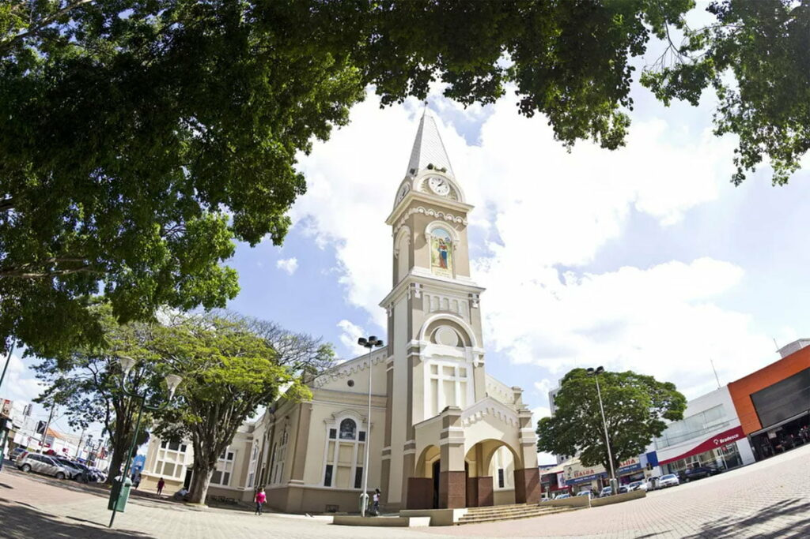
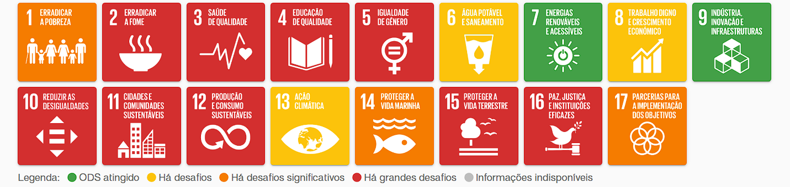
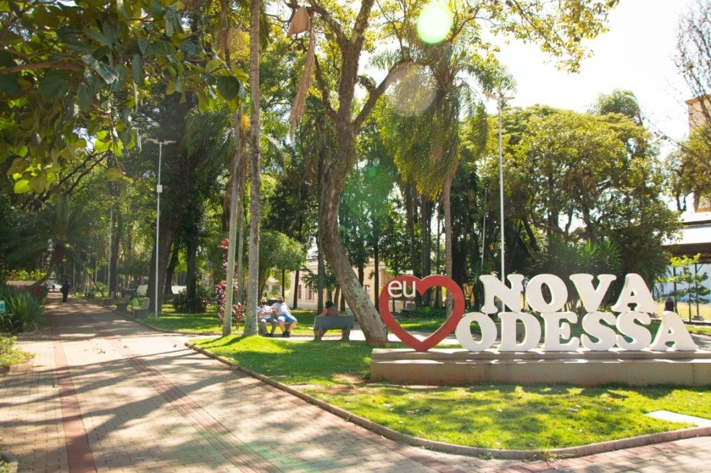
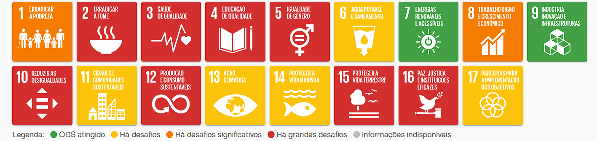
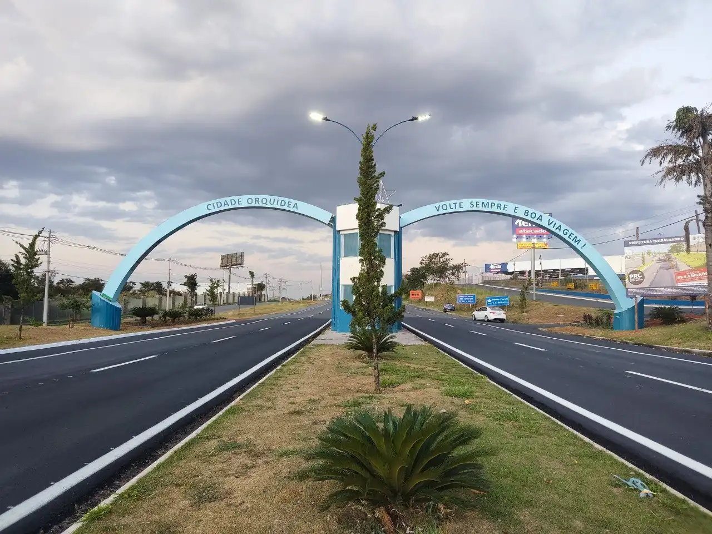
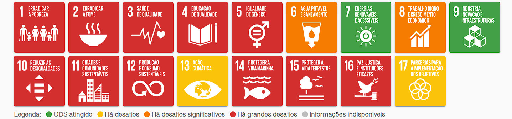
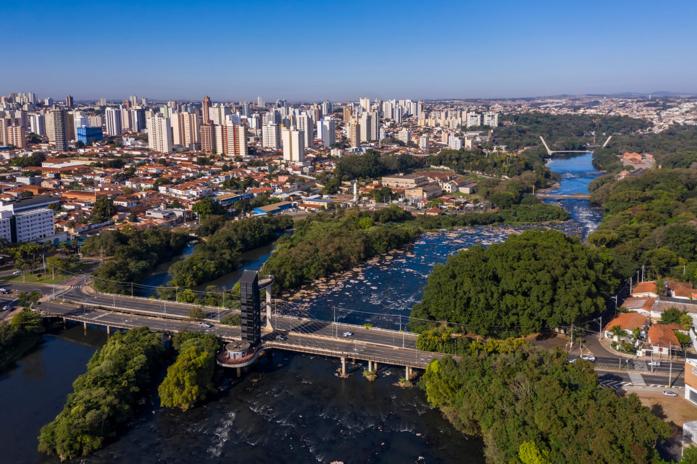
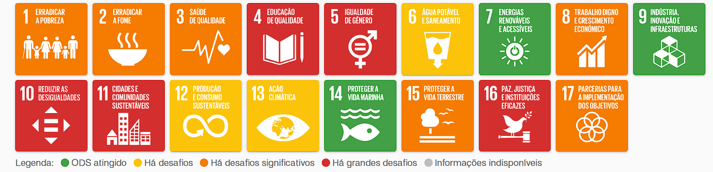
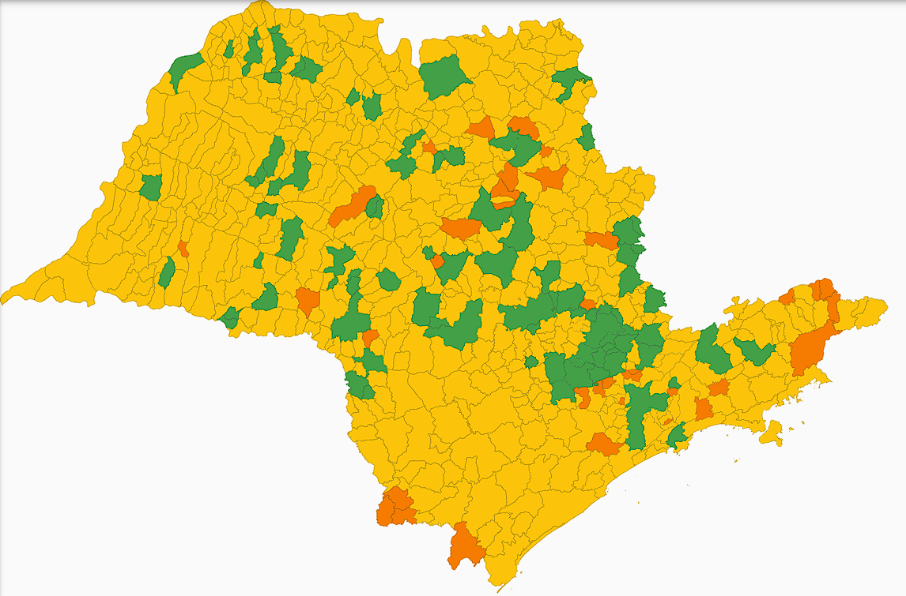
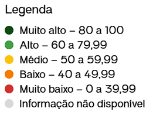
Clique para ver o mapa interativo oficial:
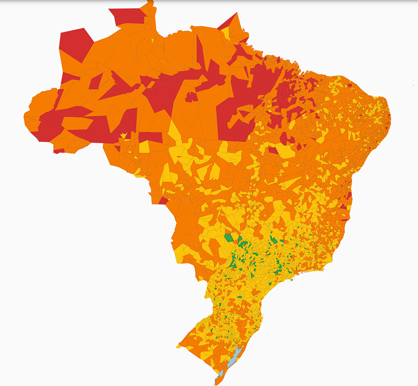
Clique para ver o mapa interativo oficial:
Clique para ver um vídeo oficial da ONU: